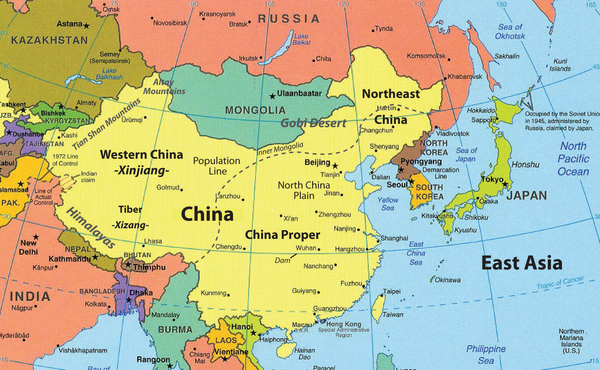
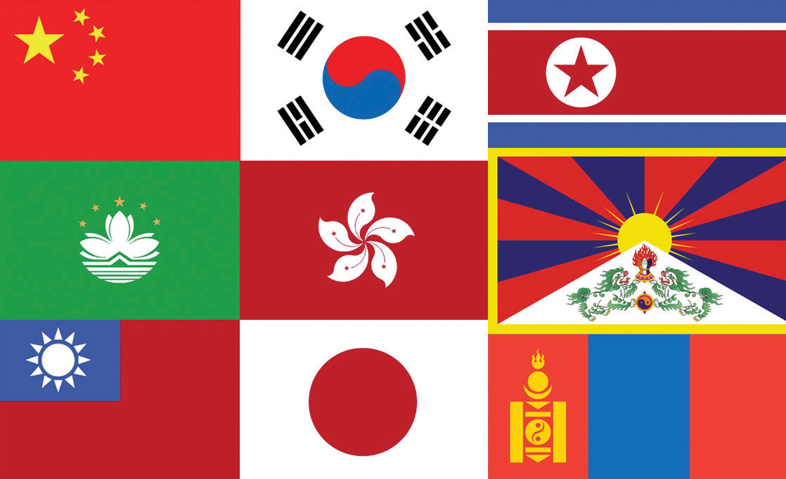

East Asia is a large expanse of territory with China as its largest country. The countries of Mongolia, North and South Korea, and Japan are China’s neighbors. The island of Taiwan, off the eastern coast of China, has an independent government that has been separated from mainland China since shortly after World War II. On the southern coast of China is Hong Kong, a former British possession with one of the best ports in Asia. Under an agreement of autonomy, Hong Kong and its port were turned over to the Chinese government in 1997. Next door, to the west of Hong Kong, is the former Portuguese colony of Macau, which has also been returned to Chinese control. In western China is the autonomous region of Tibet, referred to by its Chinese name, Xizang. Tibet has been controlled by Communist China since 1949, shortly after the People’s Republic of China (PRC) was declared a country. Lobbying attempts by the Dalai Lama and others for Tibetan independence have not been successful. The region of Tibet has recently become more integrated with the country of China because of the immigration of a large number of Chinese people to the Tibetan region.
Figure 10.1 East Asia and Its Neighbors
China is the largest country in East Asia in both physical size and population. Other countries of East Asia include Mongolia, North Korea, South Korea, and Japan. Hong Kong, Macau, and Taiwan are associated with mainland China.
Source: Updated from map courtesy of University of Texas Libraries, http://www.lib.utexas.edu/maps/middle_east_and_asia/asia_east_pol_2004.jpg.
Japan has emerged as the economic dragon of East Asia. Japanese people have a high standard of living, and the country has been an industrial and financial engine for the Pacific RimThe coastal lands bordering the Pacific Ocean.. Up and coming economic tigersQuickly emerging economic centers in Asia that now include South Korea, Taiwan, Hong Kong, and Singapore. like Singapore, Hong Kong, Taiwan, and South Korea have also experienced strong economic growth and are strong competitors in the global economy. Balancing out the advances of the economic tigers and Japan is the extensive labor base of the Chinese people, which has catapulted the Chinese economy to its position as a major player in the global economy. Left behind in the region is North Korea, which has isolated itself behind an authoritarian dictatorship since World War II. A number of countries that were former enemies in World War II are now trading partners (e.g., China and Japan), as economic trade bridges cultural gaps with common goods and services. However, cultural and political differences between these countries remain.
East Asia is home to one-fifth of the human population. The realm’s location on the Pacific Rim provides access for interaction with the global economy. The location of Japan, South Korea, and Taiwan, just off the coast of mainland China, creates an industrial environment that has awakened the human entrepreneurial spirit of the realm. Manufacturing has fueled the high-tech engines of the Pacific Rim economies, which have recently taken advantage of the massive labor pool of the Chinese heartland. Across the Pacific from East Asia are the superpower of the United States and its North American Free Trade Agreement (NAFTA) partners, countries that are both competing against and trading with the East Asian Community (EAC). The Russian realm to the north of East Asia—especially its Pacific port of Vladivostok—continues to actively engage the East Asian nations.
Figure 10.2 Flags of the East Asian Nations and Territories
From left to right, top row: China, South Korea, and North Korea. Second row: Macau, Hong Kong, and Tibet. Third row: Taiwan, Japan, and Mongolia.
Sources: Flags courtesy of the CIA World Factbook, https://www.cia.gov/library/publications/the-world-factbook/docs/flagsoftheworld.html. Tibetan flag courtesy of Reisio, http://commons.wikimedia.org/wiki/File:Flag_of_Tibet.svg.